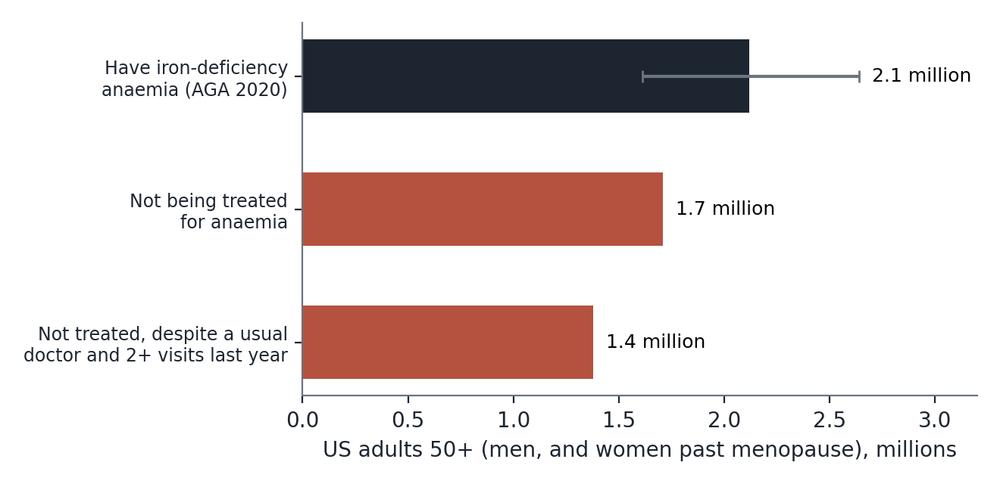
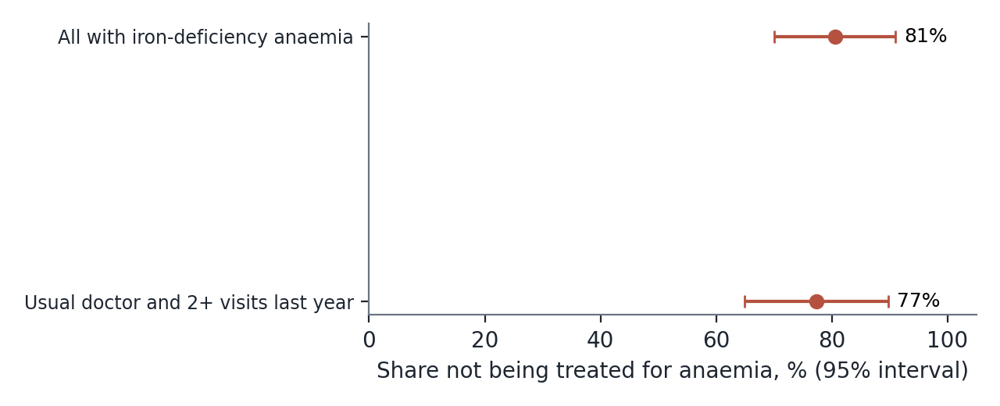
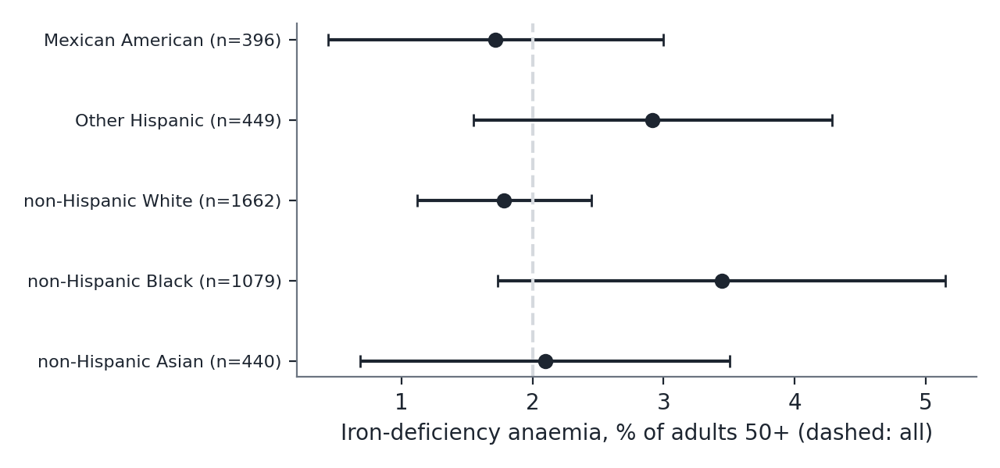
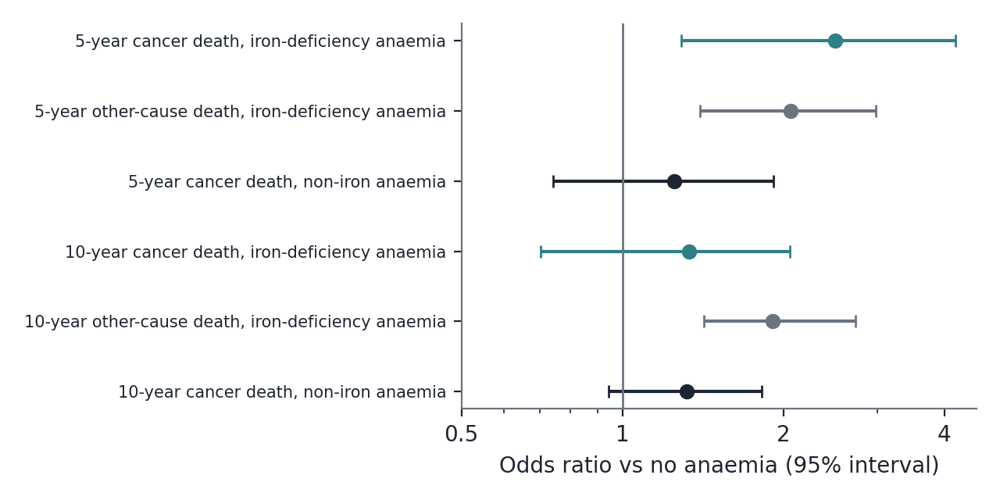

Background. A US guideline (American Gastroenterological Association, 2020) says that men and women past menopause who have iron-deficiency anaemia should have an upper endoscopy and a colonoscopy, even with no symptoms, because slow bleeding from a gut cancer is one cause. Both numbers needed are on ordinary lab reports. Record-based studies can only see people whose doctor ordered the test. NHANES measured everyone, so it can show how many people carry this red flag without being treated, and whether it signals cancer in people who were not tested because something was wrong.
Methods. Pre-registered. NHANES 2017-March 2020 (adults 50+, survey-weighted) for the national picture; NHANES III (1988-1994) and 2001-2002, linked to deaths through 2019, for five-year cancer death. Iron-deficiency anaemia (IDA): haemoglobin below 13 g/dL (men) or 12 g/dL (women) with ferritin below 45 ng/mL. A second, independent analyst (an AI agent with its own code) re-ran every number.
Results. 2.0% of US adults 50+ had IDA, about 2.12 million people (95% CI 1.61 to 2.64 million). 81% were not being treated for anaemia, and the same was true 17 years earlier in an independent survey (77% in 2001-2002, a pre-registered replication). Among people who had a usual doctor and at least two visits in the past year, 77% of IDA was untreated (exploratory), about 1.38 million people. In people tested regardless of symptoms, IDA went with higher odds of cancer death within five years (odds ratio 2.50, 95% CI 1.29 to 4.20; one cancer death per 16 people with IDA against one per 41 without anaemia), but almost as much with death from other causes (2.07), and the signal faded by ten years. Counting any iron prescription or supplement as treatment still left 70% untreated. A competing-risks model gave the same answer, and so did four routine red flags tested on 21,820 adults. Adding ferritin automatically for anaemic adults 50+ would cost about 4 ferritin tests per case found, while the usual small-red-cell shortcut misses about three in four cases, and no rule built from the blood count could safely decide whom to skip. A separate screen of flags on other routine tests found none specific to cancer. Of ten pre-registered bars in the main study, three were met (the replication, the broader definition of treatment, and the laboratory trigger, the last partly by definition), one was met but uninformative, and the six cancer-signal bars were missed or not shown.
Conclusions. Most older Americans with a guideline red flag already printed on routine lab reports report no treatment for it, including most of those who see a doctor regularly; whether they were investigated could not be measured. In an unselected population it marks a raised short-term risk of dying of cancer, but mostly poor health in general, so it argues for following the existing guideline (finding the cause of the iron loss), not for treating it as a cancer test.
Most cancer-risk tools need something new: a scan, a genetic test, a questionnaire. This study asks what is already sitting on the lab reports people have. A complete blood count, the most common blood test there is, reports haemoglobin. A ferritin test, which measures stored iron, is cheap and widely available. Together they identify iron-deficiency anaemia, and the American Gastroenterological Association's 2020 guideline strongly recommends that men and women past menopause who have it be examined for a source of gut bleeding with an upper endoscopy and a colonoscopy, even with no symptoms.1 Colon and stomach cancers bleed slowly, and iron-deficiency anaemia is one of the ways they come to light.
There is good evidence that abnormal routine blood results raise the chance of a cancer diagnosis, mostly from primary-care records in the United Kingdom, Denmark and Sweden.2,3 There is also evidence that the guideline is not followed: a survey of US primary-care physicians found gaps in how iron studies are interpreted and when patients are referred,4 and only about one in ten younger US veterans with new iron-deficiency anaemia had both endoscopies within a year.5 But record-based studies share a blind spot. They can only see people whose doctor ordered the test, usually because something was wrong, so they cannot say how many people are walking around with this result untreated, and they cannot separate the cancer signal of the result from the reason the test was ordered.
The National Health and Nutrition Examination Survey (NHANES) measured haemoglobin and ferritin in a national sample regardless of symptoms, asked about anaemia treatment and health-care use, and is linked to death records. That allows two questions: how many older Americans have this guideline red flag and are not being treated (societal), and does it signal cancer in people tested without a reason (scientific)?
The first definitions, populations, outcomes and bars were committed before the first data for them were downloaded (docs/RED_FLAG_LABS_PREREG.md). Dated addenda, each in the repository history, record what came later: coding choices before any result; checks added after the main result; changes after an independent re-analysis; further tests (replication, competing risks, a laboratory trigger, other red flags, iron pills, payers and medicines), each written before it was run, although their authors had seen the earlier results; a dropped projection; and two coding errors found and fixed. Flags on other routine tests have their own pre-registration (docs/ROUTINE_TESTS_PREREG.md). Analyses chosen after seeing a related result are not independent confirmations.
Current picture: NHANES 2017-March 2020 pre-pandemic files (demographics, complete blood count, ferritin, anaemia treatment, cancer history, insurance, usual care, visits, menstruation), adults 50+, with the exam weights, strata and primary sampling units. Ferritin was not measured in adults 50+ in 2021-2023, so this is the most recent national picture. Follow-up: NHANES III (1988-1994; ferritin and red-cell size read from the NHANES III lab file at the positions given in CDC's layout) and NHANES 2001-2002, linked to the National Death Index through 2019, adults 50-84 without earlier cancer.
Anaemia: haemoglobin below 13 g/dL in men and 12 g/dL in women (World Health Organization). Iron-deficiency anaemia (IDA): anaemia with ferritin below 45 ng/mL, the guideline's cut-off.1 Non-iron anaemia: anaemia with ferritin 45 or more. Age 50 and older stands in for being past menopause; women 50+ who reported regular periods in the past year were excluded. Not treated: reported no treatment for anaemia in the past three months. Usual place of care: one or more places usually gone to for care; two or more visits: two or more health-care visits in the past year.
National estimates are survey-weighted ratios with design-based 95% intervals (Taylor linearisation with strata and primary sampling units). The follow-up analysis is logistic regression of death from cancer within five years (secondary: ten years) on IDA and non-iron anaemia against no anaemia, adjusted for age (spline), sex, ever smoking and dataset, with bootstrap intervals. Non-cases include deaths from other causes. The same model for death from other causes tests whether the result is specific to cancer. The later analyses (multinomial competing-risks models, the laboratory trigger, routine-test flags, iron pills, payers and medicines) are described with their results. Python (pandas, scikit-learn); the main code is experiments/red_flag_labs.py, with tests of the estimator and the definitions in tests/test_red_flag_labs.py.
| # | Bar | Result | Outcome |
|---|---|---|---|
| Societal | Over half of untreated IDA in people with a usual place of care (interval above 50%) | 90% (82 to 98%) | Met, but uninformative: the baseline in all adults 50+ is 92% |
| S1 | IDA odds ratio for 5-year cancer death above 1, pooled, and the same direction in each dataset | pooled 2.50 (1.29 to 4.20); 2001-2002 has 1 cancer death among people with IDA | Not shown (pooled signal clear; one dataset cannot be tested) |
| S2 | IDA odds ratio for cancer death larger than for other-cause death (ratio interval above 1) | 1.21 (0.55 to 2.48) | Missed |
| R1 | Replication in 2001-2002: untreated share of IDA among adults 50+ has an interval above 50% | 77% (66 to 89%) | Met |
| M1 | Competing-risks model: IDA relative-risk ratio for cancer death larger than for other-cause death (interval above 1) | 1.37 (0.68 to 2.51) | Missed |
| T1 | Adding ferritin for any anaemia in adults 50+ finds 90%+ of guideline IDA at no more than 10 tests per case | 4.0 tests per case (2017-2020), 2.3 (2001-2002) | Met (the 90% part is true by definition) |
| T2 | Microcytic anaemia: cancer-death risk raised and more than other-cause death, 21,820 adults | 1.74 (0.81 to 3.20); ratio 0.82 | Missed |
| T3 | Cancer signal stronger in months 0-24 than 25-60 | ratio 1.55 (0.40 to 5.71) | Missed (too few deaths) |
| A1 | Untreated share stays above 50% (interval) when any iron prescription or supplement counts as treatment | 70% (57 to 82%) | Met |
| S3 | IDA odds ratio for cancer death larger than for non-iron anaemia (interval above 1) | 2.00 (0.88 to 4.11) | Missed (borderline; crosses 1) |
Each bar was committed in docs/RED_FLAG_LABS_PREREG.md before its own analysis was run (see Section 2.1). The routine-test screen (Section 3.8) had its own bar, which no flag passed.
Of US adults 50+, 2.0% (95% CI 1.5 to 2.5%) had iron-deficiency anaemia, about 2.12 million people (Table 2, Figure 1). The rate was similar in men (1.8%) and women past menopause (2.2%). 81% of them reported no treatment for anaemia in the past three months, about 1.71 million people.

The pre-registered societal bar asked whether most of the untreated had a usual place of care. They did (90%), but so do 92% of all adults 50+, so that bar says nothing about missed opportunities; it was met but uninformative. The more telling figure, chosen after the re-check and labelled exploratory, is the other direction: among people with a usual doctor and two or more visits in the past year, 77% of iron-deficiency anaemia was untreated (95% CI 65 to 90%; Figure 2), about 1.38 million people. Even among people in regular contact with a doctor, about three in four were not being treated. (The comparison group without regular contact is too small, 16 people, to say whether contact helps.)

| Measure | Estimate | 95% interval | Sample |
|---|---|---|---|
| Prevalence, all | 2.0% | 1.5 to 2.5% | 120 of 4,192 |
| National count | 2.12 million | 1.61 to 2.64 million | |
| Prevalence, men | 1.8% | 0.8 to 2.7% | |
| Prevalence, women past menopause | 2.2% | 1.6 to 2.9% | |
| Not treated for anaemia in the past 3 months | 81% | 70 to 91% | n = 120 |
| Of the untreated: usual place of care | 90% | 82 to 98% | baseline in all adults 50+: 92% |
| Of the untreated: 2+ health-care visits past year | 88% | 78 to 98% | |
| Of the untreated: insured | 91% | 83 to 100% | |
| Untreated share among people with a usual doctor and 2+ visits (exploratory) | 77% | 65 to 90% | n = 102 |
Iron-deficiency anaemia: haemoglobin below 13 g/dL (men) or 12 g/dL (women) and ferritin below 45 ng/mL (AGA 2020). Women 50+ reporting regular periods in the past year excluded. Design-based intervals by Taylor linearisation.
The rate differed by group, from 1.8% in non-Hispanic White adults to 3.4% in non-Hispanic Black adults, with wide intervals (Figure 3). Race is reported as a description, not used as a predictor.

In NHANES 2001-2002, an independent sample with the same measurements and questions, 2.5% of adults 50+ had iron-deficiency anaemia (95% CI 1.5 to 3.6%; 54 people), and 77% of them were not being treated (95% CI 66 to 89%). The pre-registered bar (interval above 50%) was met. Among those with a usual doctor and two or more visits it was 77%. The share was similar in the two periods (their intervals overlap; no formal test of change was made). Both surveys were collected before or as the 2020 guideline appeared, so neither can show its effect.
Leaving out people who reported an earlier cancer, using a stricter ferritin cut-off of 30 ng/mL, or looking at men only changed little: prevalence 2.1%, 1.7% and 1.8%; untreated 84%, 80% and 87%.
In the follow-up data, 218 of 7,793 adults had iron-deficiency anaemia (Table 3). 6.4% of them died of cancer within five years, against 2.5% of people without anaemia: one cancer death per 16 people flagged, against one per 41. The adjusted odds ratio was 2.50 (95% CI 1.29 to 4.20). But the odds of dying of other causes were raised almost as much (2.07), so the result is not specific to cancer (bar S2 missed), and it did not clearly beat non-iron anaemia (S3 missed, interval 0.88 to 4.11). At ten years the cancer odds ratio fell to 1.33 (0.70 to 2.05) while the other-cause odds ratio stayed near 1.91 (Figure 4). That pattern, a cancer signal concentrated in the first years and a frailty signal that lasts, fits cancers that were already present and bleeding, but it was noticed after the run and the numbers are small: 14 cancer deaths among people with iron-deficiency anaemia, 13 of them in NHANES III. The 2001-2002 survey had 1, so it cannot confirm the direction (S1 not shown).
A competing-risks model, which treats death from cancer and death from other causes as rival outcomes in one model (pre-registered in Addendum 4), gave the same picture: relative-risk ratio 3.10 (95% CI 1.48 to 4.94) for cancer death and 2.26 (1.48 to 3.20) for other-cause death; their ratio, 1.37 (0.68 to 2.51), does not show cancer specificity.

| Dataset | Adults | With IDA | Cancer deaths in IDA | Cancer death, IDA | Cancer death, no anaemia | Odds ratio, cancer death (95% CI) | Odds ratio, other-cause death |
|---|---|---|---|---|---|---|---|
| NHANES 2001-2002 | 1,683 | 41 | 1 | 2.4% | 1.9% | too few deaths | |
| NHANES III | 6,110 | 177 | 13 | 7.3% | 2.6% | 2.81 (1.24 to 4.75) | 1.88 (1.18 to 2.83) |
| Pooled | 7,793 | 218 | 14 | 6.4% | 2.5% | 2.50 (1.29 to 4.20) | 2.07 (1.40 to 2.98) |
Odds ratios adjusted for age (spline), sex, ever smoking and dataset; bootstrap intervals (500 resamples). Non-cases include deaths from other causes.
Ferritin is not part of a routine blood count, so most people with guideline iron-deficiency anaemia are found only if someone orders it. A common shortcut is to look into iron only when red cells are small (MCV under 80 fL). Among adults 50+, that shortcut found only 27% of guideline cases in 2017-2020 (95% CI 17 to 37%) and 20% in 2001-2002: most iron-deficiency anaemia in older adults has normal-sized red cells. Adding ferritin automatically whenever an adult 50+ is anaemic finds every case by definition, at 4.0 ferritin tests per case found in 2017-2020 and 2.3 in 2001-2002 (pre-registered bar T1 met; its sensitivity part was true by definition, so the informative numbers are the cost per case and the shortcut's miss rate). Medicare pays $13.63 for a ferritin test (CPT 82728, 2026 Clinical Laboratory Fee Schedule), so the rule costs about $55 in tests per case found (2017-2020): a cheap laboratory rule, not a new test.
Ferritin was not measured in older adults in 2003-2014, but haemoglobin, red-cell size, platelets and a weight-loss question were. Pooling NHANES 1999-2014 with NHANES III gave 21,820 adults 50-84 and 475 cancer deaths within five years, about four times the data of Section 3.5. In one competing-risks model, no routine red flag was specific to cancer (pre-registered bar T2 missed). Microcytic anaemia: cancer 1.74 (0.81 to 3.20) against other causes 2.13. Other anaemia: 1.84 against 3.09, mostly frailty. Platelets above 400: 1.71 (1.01 to 2.77) against 1.56. Unintentional weight loss (1999-2014 only): 1.16 (0.79 to 1.60) against 1.94. The timing test (T3) was missed: 12 cancer deaths among people with microcytic anaemia are too few to compare early and late. Several of these did go with more cancer deaths (ferritin-confirmed iron-deficiency anaemia in Section 3.5, anaemia with red cells of normal or large size, and high platelets), but none was shown to be specific to cancer.
The same question was asked of other tests people commonly have: calcium, liver enzymes, albumin, white count, platelets, a liver score calculated from them, blood sugar (HbA1c), urine albumin and C-reactive protein. Cut-offs, bars and a multiple-testing correction were committed first (docs/ROUTINE_TESTS_PREREG.md); the analysis was not blind, because earlier work here had suggested routine values mostly mark general ill health. Discovery: NHANES 1999-2014, 16,303 adults 50-84 and 332 cancer deaths within five years. Check: NHANES III, 6,530 adults and 190 cancer deaths. Most flags raised the risk of cancer death, but none raised it clearly more than the risk of other deaths: for a few (high white count, high platelets, diabetes-range HbA1c) the estimate leaned towards cancer in 1999-2014, with intervals that included no difference. No flag passed discovery, so none was confirmed. Albumin in urine, low albumin and having two or more flags pointed clearly the other way, towards deaths from other causes. The NHANES III columns are therefore exploratory. A first run of that check read the wrong column for diagnosed diabetes; the error was caught by an implausible rate, fixed, and the code now stops if the column is wrong.
| Flag | Cancer deaths flagged (1999-2014) | Cancer RRR (95% CI) | Other-cause RRR | Cancer / other (95% CI) | NHANES III: cancer RRR | Other-cause RRR | Cancer / other |
|---|---|---|---|---|---|---|---|
| High calcium | 3 | too few | too few | ||||
| High alkaline phosphatase | 14 | 2.66 (1.52 to 4.66) | 3.81 | 0.70 (0.39 to 1.26) | 1.76 (1.10 to 2.81) | 2.26 | 0.78 (0.47 to 1.28) |
| Low albumin | 9 | 3.37 (1.68 to 6.76) | 9.86 | 0.34 (0.17 to 0.69) | 2.11 (1.08 to 4.12) | 4.72 | 0.45 (0.23 to 0.89) |
| High GGT | 36 | 1.88 (1.31 to 2.71) | 2.49 | 0.76 (0.51 to 1.12) | 1.40 (0.79 to 2.49) | 2.49 | 0.56 (0.30 to 1.03) |
| High white count | 28 | 2.75 (1.82 to 4.13) | 2.02 | 1.36 (0.86 to 2.14) | 2.04 (1.17 to 3.57) | 2.20 | 0.93 (0.51 to 1.69) |
| High platelets | 11 | 1.94 (1.04 to 3.63) | 1.71 | 1.14 (0.57 to 2.26) | 1.90 (1.00 to 3.60) | 1.79 | 1.06 (0.53 to 2.13) |
| High FIB-4 liver score | 35 | 1.62 (1.11 to 2.37) | 2.19 | 0.74 (0.50 to 1.11) | 1.10 (0.66 to 1.86) | 1.57 | 0.71 (0.41 to 1.22) |
| Unrecognised diabetes-range HbA1c | 18 | 1.19 (0.73 to 1.93) | 0.86 | 1.38 (0.80 to 2.40) | 0.54 (0.23 to 1.23) | 0.80 | 0.67 (0.28 to 1.64) |
| Albumin in urine | 87 | 1.69 (1.31 to 2.18) | 3.41 | 0.49 (0.38 to 0.65) | 1.58 (1.10 to 2.27) | 2.85 | 0.56 (0.38 to 0.82) |
| High C-reactive protein | 42 | 2.14 (1.51 to 3.04) | 2.39 | 0.90 (0.61 to 1.31) | 2.57 (1.75 to 3.78) | 2.85 | 0.90 (0.59 to 1.36) |
| Two or more of these | 67 | 2.38 (1.80 to 3.16) | 3.61 | 0.66 (0.49 to 0.89) | 1.84 (1.29 to 2.63) | 3.20 | 0.57 (0.39 to 0.84) |
Each flag modelled alone against everyone else with that test, adjusted for age (spline), sex, ever smoking and survey wave. Unweighted. Bar: cancer RRR and ratio above 1 with p below 0.05/11. Blood pressure, pulse and lung function were not included.
Treated, counted more generously (bar A1 met). The main estimate uses one question about anaemia treatment. Counting iron prescriptions as treatment changed nothing (81% untreated; no oral iron prescription matched among these cases). Also counting iron supplements at a treatment dose (45 mg a day or more) gave 78%, and counting any iron supplement at all, including a multivitamin with a little iron, gave 70% (95% CI 57 to 82%), about 1.48 million people. Even on the most generous definition most cases showed no iron at all. A first run matched drug names containing the letters "iron", which also caught buspirone and spironolactone; it was corrected before reporting.
Who covers the untreated (descriptive). Among people untreated on the broadest definition, 48% had Medicare, 51% private insurance, 11% Medicaid and 7% no insurance (people can hold more than one; intervals are wide). Nearly all are insured, so a rule at the insurer or health-system level could reach them.
Medicines that can drain or block iron (descriptive, not adjusted for age). 24% of people with iron-deficiency anaemia had a prescription blood thinner or antiplatelet drug, against 8% of people without anaemia, and 38% an acid reducer (proton-pump inhibitor), against 15%. 55% had at least one of these or an anti-inflammatory painkiller (against 27%). Over-the-counter use is not counted. These drugs do not explain away the need to look: the guideline's work-up applies whether or not someone takes them. They do suggest a practical trigger, since a pharmacist or an electronic record already sees the prescription.
A laboratory might prefer to add ferritin only when the blood count looks like iron deficiency. We tested whether any rule from numbers already on the count could do that safely, with the rules, cut-offs and bar fixed first (docs/CBC_RULE_PREREG.md): derived in 830 anaemic adults 50+ in NHANES III, then tested unchanged in 713 in 2001-2002 and 2017-2020 (174 with ferritin below 45). The bar was at least 95% of cases found (interval above 90%) while skipping at least a quarter of ferritin tests. No rule passed. Single cut-offs and their combination missed a third or more of cases. A model using all the indices, age and sex found 94% but skipped only 16% of tests, and its sensitivity differed between the two surveys (88% and 100%). The practical rule is therefore the simple one: add ferritin for every anaemic adult 50+. Predicting iron deficiency from blood-count indices has been studied by others, and a larger or richer model might do better.
| Rule | Cases found, NHANES III (derivation) | Cases found, 2001-2002 and 2017-2020 (95% CI) | Cases missed | Ferritin tests skipped |
|---|---|---|---|---|
| MCV below 80 | 25% | 24% (14 to 33%) | 115 of 174 | 86% |
| MCH below 27 | 36% | 37% (25 to 49%) | 97 of 174 | 79% |
| MCHC below 32 | 23% | 26% (15 to 38%) | 118 of 174 | 86% |
| RDW above 14.5 | 48% | 61% (51 to 72%) | 61 of 174 | 53% |
| Any of the four | 57% | 65% (54 to 75%) | 53 of 174 | 50% |
| Model on all indices | 95% | 94% (89 to 99%) | 7 of 174 | 16% |
Survey-weighted, design-based intervals. RDW depends on the analyser, which differed between surveys.
A second analyst (an AI agent writing its own code from the pre-registration) checked the first version of the study (Sections 3.2 and 3.5; the later sections have not had that check). It reproduced every national number to the decimal and the pooled odds ratios within bootstrap noise (docs/independent_check/red_flag/). It found four weaknesses, all acted on: the societal bar was uninformative (reported above); "not treated" is not the same as "not recognised" (wording changed throughout); 441 NHANES III records had no follow-up months from the exam and had been silently dropped (recovered from the interview date); and the follow-up result rests on very few deaths (stated).
The societal finding is the stronger one, and it was similar in two surveys 17 years apart. Of the roughly 2.12 million older Americans with a result that a US guideline says should be investigated, most report no treatment for anaemia, including most of those who see a doctor regularly. This study cannot say whether they had the recommended endoscopy, which the surveys do not ask about, and the guideline itself was published in 2020, during the later survey. What it does show is a large group whose result shows no sign of having been acted on, which is worth checking in data that record the work-up. Cheap changes follow, each needing no new test: a laboratory can add ferritin automatically when haemoglobin is low in someone over 50; an electronic record can flag anaemia with low ferritin and point to the guideline; a prescription check can prompt a blood count and ferritin for older people on blood thinners or acid reducers (a suggestion this study has not tested); and a patient can read their own report, which is what the companion page in the Oncovision app does (/redflag: three numbers in, the guideline's verdict and the questions to ask out).
The scientific finding is more modest and should be read carefully. In people tested without a reason, iron-deficiency anaemia raised the short-term odds of dying of cancer about two and a half times, but raised the odds of dying of anything else almost as much. It is a marker of poor health that includes cancer, not a cancer test. That supports the guideline's logic (find out why someone is losing iron) without supporting a claim that this blood result screens for cancer.
A prior-art check on 26 November 2026 (Europe PMC, including PubMed and preprints: 10 query families, 1,107 records, 169 read in full abstract; data/audit/prior_art_red_flag.csv) found three pieces of work closer than those cited above, and the claims here are narrowed accordingly. Wang and Wang used the same survey and the same treatment question to report national anaemia treatment rates for 2005-2018,8 so "anaemia often goes untreated" is not new. Tawfik and colleagues estimated iron deficiency and its trend from 1999-2002 to 2017-2020,9,10 so the rise in iron deficiency is not new. In the ARIC community cohort, anaemia was linked to death from cancer, heart disease and lung disease to a similar degree (hazard ratios about 1.7 to 1.8 adjusted for demographics, weaker after full adjustment),11 which agrees with the scientific result here. What we did not find: an estimate restricted to the guideline's own definition and population (anaemia with ferritin under 45 ng/mL in men and women past menopause, the group for whom endoscopy is strongly recommended), the untreated share among people in regular contact with a doctor, or the comparison of that share across two eras with ferritin measured. Those three pieces are the contribution. For the additions in Sections 3.6 and 3.7, closer work exists too: automatic laboratory algorithms that add iron tests have already been studied in primary care,12 normocytic iron deficiency is well described, and record-based work has studied cancer and competing deaths after symptoms in primary care.13 The new parts are the national size of the gap the small-red-cell shortcut leaves in older adults, with its cost per case, and a side-by-side test of four routine red flags for cancer specificity in a population tested without a reason. Searches are not proof of absence.
An AI assistant (Anthropic Claude, via Claude Code) wrote the code, ran the analyses, drafted the text and searched the literature; a second AI agent re-ran the analysis with its own code. An AI cannot be an author. The human author is responsible for the work and must check every statement. No human second analyst or clinician has reviewed it.
Public, de-identified NCHS data; no participants contacted. Code, pre-registration with addenda, results and the re-analysis are in github.com/palashraks-afk/OncoVision. No funding; no conflicts of interest.
References 2-6 and 8-13 were taken from Europe PMC records. The author must still check each against the original, and the guideline (reference 1) at its source.